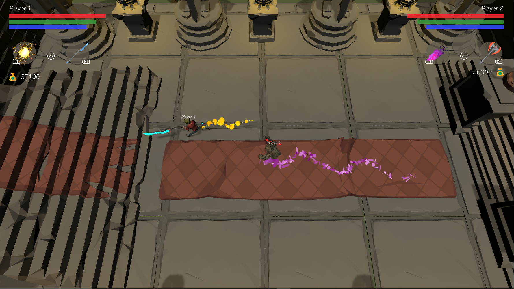
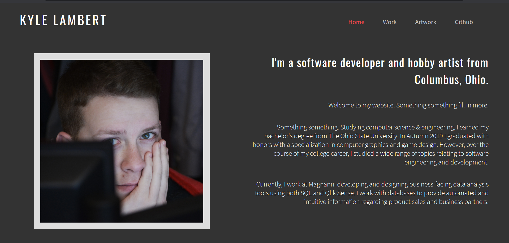

Dungeons of Avarice
A procedurally-generated roguelike video game developed in the Unity game engine. The game supports
one or two players simultaneously and features endless dungeons with increasing difficulty.
Face various enemies while collecting over 60 unique melee weapons and 12 types of magic spells. This
project was developed alongside three classmates at The Ohio State University as part
of our department's senior capstone design program.
Read more

Personal Website
My personal website that you are browsing right now. All source code is written from the
ground up in HTML and CSS and is publicly available on my Github page. This project serves
as a way to keep my portfolio up to date as well as practice some basic web development.
Read more
Boids Birds Algorithm
A WebGL and JavaScript project implementation of Boids algorithm, which simulates the flocking or
swimming patterns of birds or fish. A simple 2D animation system is used to display the art of birds
from the NES classic "Duck Hunt". The project also utilizes WebVR to wrap the birds around the user in a
3D space provided they use a supported mobile device, Virtual Reality headset, and web browser.
Read more
Mario/Portal Game
Developed as part of a junior-level project course, this Super Mario Bros. expansion game
features 30 different power-ups & costumes as well as puzzle-solving action using the
power of portals. The engine was developed from scratch within the Monogame framework.
Experience the first level of this NES classic as you never have before.
Read more
Zork-Like Text Adventure
Created from the ground up in C++, this console-based game is heavily inspired
by text adventures from the 1970s and 80s, such as Zork. This project acts as a framework for
setting up dungeons to explore and puzzles to solve. It also includes three example
adventures for players to experience.
Read more